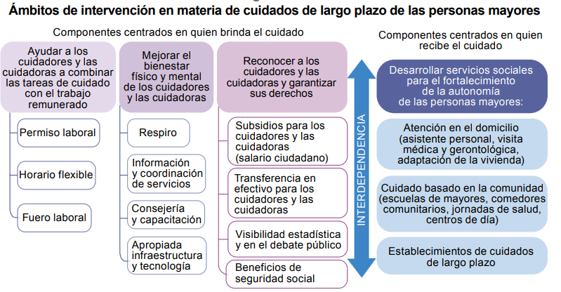

A su vez,
identificó cuatro factores que intervienen en las actitudes y conductas
negativas hacia las personas mayores en la sociedad occidental: el
miedo a la muerte, el énfasis en un ideal joven, la productividad medida
estrictamente en términos de potencial económico y la concentración en la
institucionalización de las personas mayores.
Como el temor a la muerte es algo cultural, mientras no lo han
aprendido los niños suelen ser más condescendientes con los mayores
El énfasis en un ideal joven y un imaginario asentado en la
productividad van unidos. La belleza, la lozanía y la sexualidad como
atributos de una inacabable juventud constituyen rasgos sobrestimados
en la sociedad (Northcott, 1975). Lo mismo ocurre con la acumulación de
bienes materiales y la primacía de los proyectos individuales, asociados
al éxito y al poder. En la vejez, las personas pierden ambos atributos —la
juventud y la productividad basada en el empleo— y constituirían, por lo
tanto, una carga para la sociedad, a diferencia de los niños, que cuentan
con todo el potencial para desarrollarlos (Butler, 1969).
una de
las formas más antiguas de atención de las personas mayores ha sido
su internación en instituciones denominadas hospicios o asilos, cuyas
prácticas moralizantes y segregadoras siguen marcando en la actualidad
la representación colectiva de la edad avanzada

Cuidados a domicilio
Transferencias monetarias para los cuidadores no remunerados
La alternativa de las familias sustitutas
Formación para el cuidado de las personas mayores
El acceso al crédito en el marco de los
derechos humanos
la emigración de parejas jóvenes a nuevas
ciudades, mientras sus ancianos padres quedan en las zonas residenciales
cada vez más deterioradas del centro de las urbes